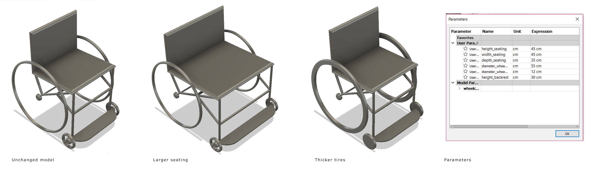
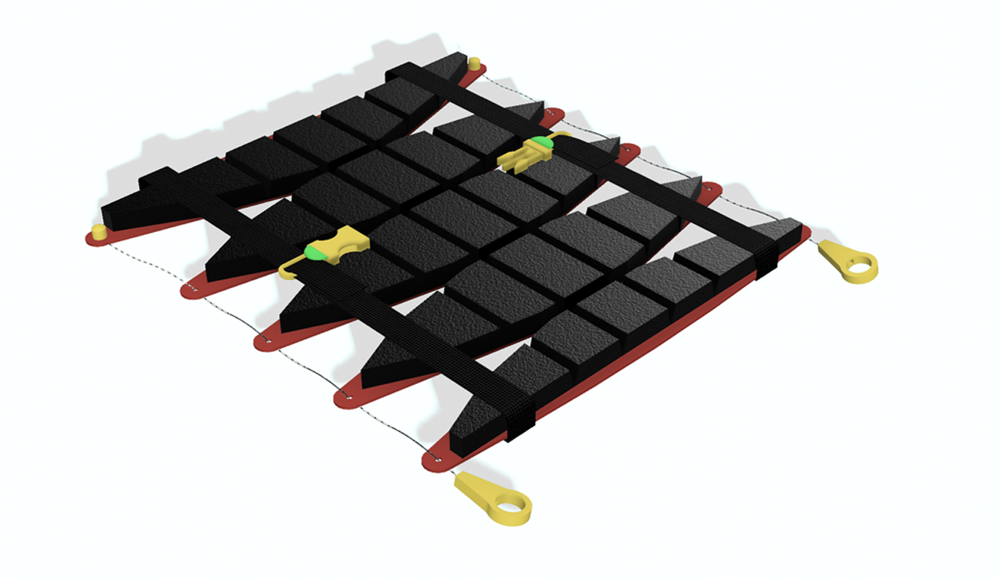
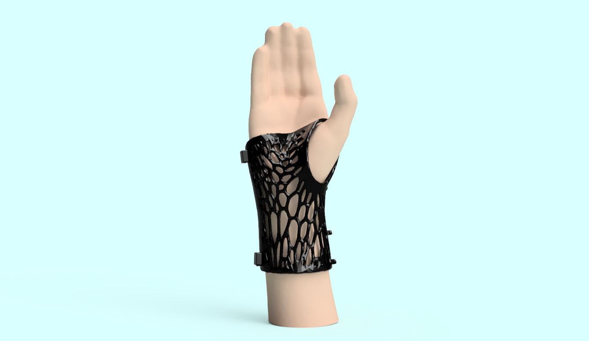
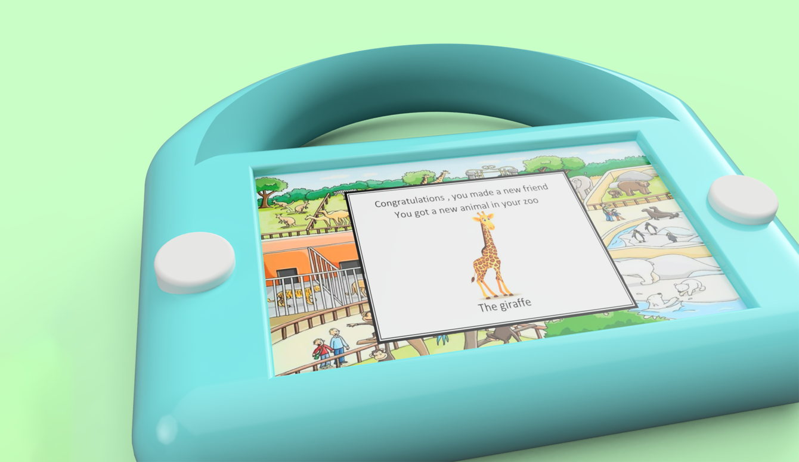
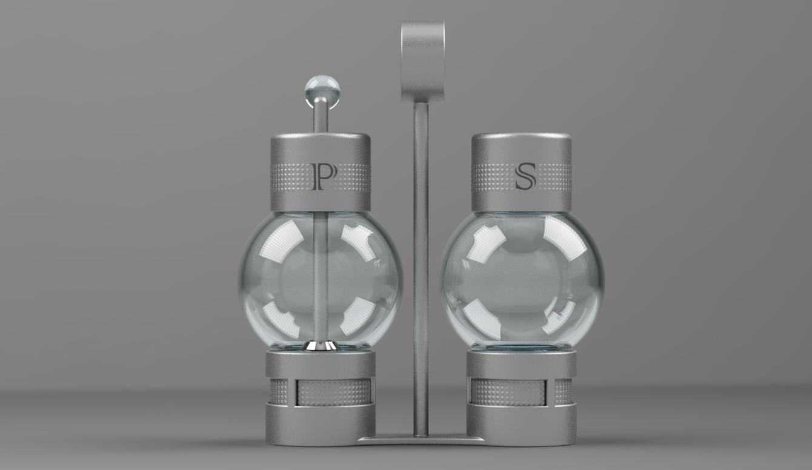
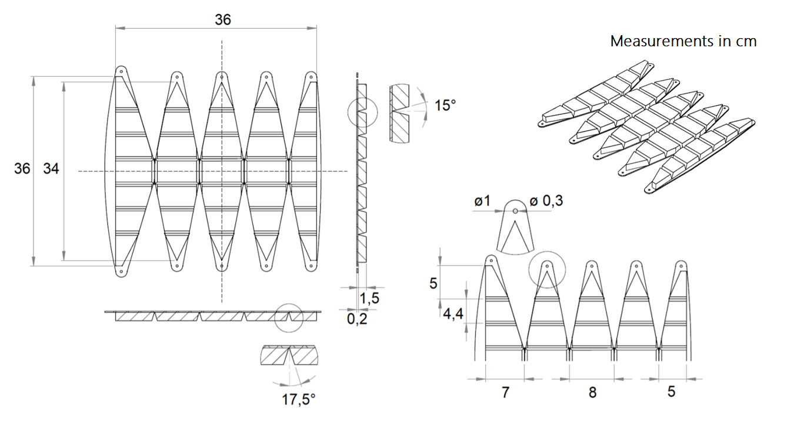

3D modeling
Text about 3D modeling, experience with Solidworks and Fusion360
Example of 3D model. Wrist brace made using a 3D scan of a hand to ensure perfect fit.
3D models of assemblies.
By using parametric modeling I am able to make models with user defined parameters, this make it easy to change aspects of a design. The models updates automatically when the variables are changed. The example above shows a very basic wheelchair models where variables like seating with, depth and wheel size can be changed.




Some examples of 3D models.
With use of 3D models technical drawings can be made to show measurements and different views.